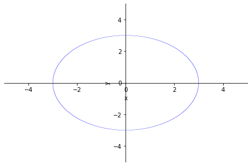
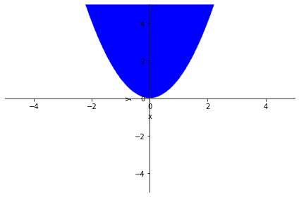
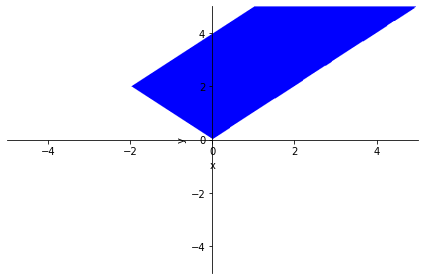
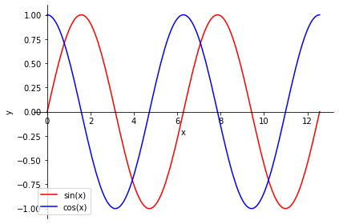

5.1. Introduction to SymPy#
5.1.1. Objectives:#
Use of symbolic variables.
Assumptions and requirements on variables.
Manipulation of simple one-variable expressions.
Creation of functions from expressions.
Graphical representation of regions and functions with SymPy.
5.1.2. Preliminary note: installing Jupyter notebook under Anaconda#
To use these lecture notes directly from a Python installation with Anaconda, it is enough to click on the ‘Jupyter notebook’ application, which is already installed by default (for more details: https://jupyter-notebook-beginner-guide.readthedocs.io/en/latest/execute.html).
You can install Anaconda for your operating system here: https://docs.anaconda.com/anaconda/install/
5.1.3. Variables, expressions, and functions#
5.1.3.1. Installing and loading the module#
In Python, besides numerical variables, which we will study in greater depth a little later, there are symbolic variables, which allow us to compute limits, derivatives, integrals, etc., just as we usually do in mathematics classes. To be able to carry out these operations, which are common and necessary in a Calculus course, we need to have the SymPy library installed.
This module does not work with a data structure based on numbers, but with objects that have attributes and methods that attempt to reproduce the mathematical behavior of variables, functions, regions, equations, etc., with which one usually works in algebra and differential and integral calculus.
To make the SymPy module available, it must be installed using the pip tool (or conda, if you work in separated environments). For use in Microsoft Azure Notebooks (https://notebooks.azure.com/), the following installation is used:
!pip -q install sympy
To make the SymPy module available and import it for the rest of these lecture notes, we will use:
import sympy as sp
5.1.3.2. Symbolic variables#
To work in symbolic mode it is necessary to define symbolic variables. To do this,
we will use the sp.Symbol function.
Let us look at some examples of its use:
x = sp.Symbol('x') # define the symbolic variable x
y = sp.Symbol('y') # define the symbolic variable y
f = 3*x + 5*y # now we have defined the symbolic expression f
print(f)
a, b, c = sp.symbols('a:c') # define the variables a, b, c as symbolic.
expresion = a**3 + b**2 + c
print(expresion)
3*x + 5*y
a**3 + b**2 + c
For clarity in both implementation and calculations, it will be common for the name of the symbolic variable and the name of the SymPy object in which it is stored to coincide, but this does not have to be the case:
a = sp.Symbol('x')
print(a)
a.name
x
'x'
We must be clear that the variables x or y, defined above, are not numbers, nor do they belong to objects defined with the NumPy module, which we will study later. All symbolic variables are objects of class sp.Symbol, and their attributes and methods are completely different from numerical variables and NumPy vectors.
We can check the methods and attributes that can be executed on these objects by running the following command:
print(type(x))
dir(x)
<class 'sympy.core.symbol.Symbol'>
['_Symbol__xnew_cached_',
'__abs__',
'__add__',
'__and__',
'__annotations__',
'__class__',
'__complex__',
'__delattr__',
'__dir__',
'__divmod__',
'__doc__',
'__eq__',
'__float__',
'__floordiv__',
'__format__',
'__ge__',
'__getattribute__',
'__getnewargs__',
'__getnewargs_ex__',
'__getstate__',
'__gt__',
'__hash__',
'__init__',
'__init_subclass__',
'__int__',
'__invert__',
'__le__',
'__lshift__',
'__lt__',
'__mod__',
'__module__',
'__mul__',
'__ne__',
'__neg__',
'__new__',
'__new_stage2__',
'__or__',
'__pos__',
'__pow__',
'__radd__',
'__rand__',
'__rdivmod__',
'__reduce__',
'__reduce_ex__',
'__repr__',
'__rfloordiv__',
'__rlshift__',
'__rmod__',
'__rmul__',
'__ror__',
'__round__',
'__rpow__',
'__rrshift__',
'__rshift__',
'__rsub__',
'__rtruediv__',
'__rxor__',
'__setattr__',
'__setstate__',
'__sizeof__',
'__slots__',
'__str__',
'__sub__',
'__subclasshook__',
'__sympy__',
'__truediv__',
'__trunc__',
'__xnew__',
'__xor__',
'_add_handler',
'_args',
'_assumptions',
'_compare_pretty',
'_constructor_postprocessor_mapping',
'_diff_wrt',
'_do_eq_sympify',
'_eval_adjoint',
'_eval_as_leading_term',
'_eval_conjugate',
'_eval_derivative',
'_eval_derivative_matrix_lines',
'_eval_derivative_n_times',
'_eval_evalf',
'_eval_expand_complex',
'_eval_interval',
'_eval_is_algebraic_expr',
'_eval_is_extended_negative',
'_eval_is_extended_positive',
'_eval_is_extended_positive_negative',
'_eval_is_meromorphic',
'_eval_is_negative',
'_eval_is_polynomial',
'_eval_is_positive',
'_eval_is_rational_function',
'_eval_lseries',
'_eval_nseries',
'_eval_power',
'_eval_refine',
'_eval_rewrite',
'_eval_simplify',
'_eval_subs',
'_eval_transpose',
'_evalf',
'_exec_constructor_postprocessors',
'_expand_hint',
'_explicit_class_assumptions',
'_from_mpmath',
'_has',
'_hashable_content',
'_merge',
'_mhash',
'_mul_handler',
'_op_priority',
'_parse_order',
'_pow',
'_prop_handler',
'_random',
'_recursive_call',
'_repr_disabled',
'_repr_latex_',
'_repr_png_',
'_repr_svg_',
'_rewrite',
'_sage_',
'_sanitize',
'_sorted_args',
'_subs',
'_to_mpmath',
'_xreplace',
'adjoint',
'apart',
'args',
'args_cnc',
'as_base_exp',
'as_coeff_Add',
'as_coeff_Mul',
'as_coeff_add',
'as_coeff_exponent',
'as_coeff_mul',
'as_coefficient',
'as_coefficients_dict',
'as_content_primitive',
'as_dummy',
'as_expr',
'as_independent',
'as_leading_term',
'as_numer_denom',
'as_ordered_factors',
'as_ordered_terms',
'as_poly',
'as_powers_dict',
'as_real_imag',
'as_set',
'as_terms',
'aseries',
'assumptions0',
'atoms',
'binary_symbols',
'cancel',
'canonical_variables',
'class_key',
'coeff',
'collect',
'combsimp',
'compare',
'compute_leading_term',
'conjugate',
'copy',
'could_extract_minus_sign',
'count',
'count_ops',
'default_assumptions',
'diff',
'dir',
'doit',
'dummy_eq',
'equals',
'evalf',
'expand',
'expr_free_symbols',
'extract_additively',
'extract_branch_factor',
'extract_multiplicatively',
'factor',
'find',
'fourier_series',
'fps',
'free_symbols',
'fromiter',
'func',
'gammasimp',
'getO',
'getn',
'has',
'has_free',
'integrate',
'invert',
'is_Add',
'is_AlgebraicNumber',
'is_Atom',
'is_Boolean',
'is_Derivative',
'is_Dummy',
'is_Equality',
'is_Float',
'is_Function',
'is_Indexed',
'is_Integer',
'is_MatAdd',
'is_MatMul',
'is_Matrix',
'is_Mul',
'is_Not',
'is_Number',
'is_NumberSymbol',
'is_Order',
'is_Piecewise',
'is_Point',
'is_Poly',
'is_Pow',
'is_Rational',
'is_Relational',
'is_Symbol',
'is_Vector',
'is_Wild',
'is_algebraic',
'is_algebraic_expr',
'is_antihermitian',
'is_commutative',
'is_comparable',
'is_complex',
'is_composite',
'is_constant',
'is_even',
'is_extended_negative',
'is_extended_nonnegative',
'is_extended_nonpositive',
'is_extended_nonzero',
'is_extended_positive',
'is_extended_real',
'is_finite',
'is_hermitian',
'is_hypergeometric',
'is_imaginary',
'is_infinite',
'is_integer',
'is_irrational',
'is_meromorphic',
'is_negative',
'is_noninteger',
'is_nonnegative',
'is_nonpositive',
'is_nonzero',
'is_number',
'is_odd',
'is_polar',
'is_polynomial',
'is_positive',
'is_prime',
'is_rational',
'is_rational_function',
'is_real',
'is_scalar',
'is_symbol',
'is_transcendental',
'is_zero',
'kind',
'leadterm',
'limit',
'lseries',
'match',
'matches',
'n',
'name',
'normal',
'nseries',
'nsimplify',
'powsimp',
'primitive',
'radsimp',
'ratsimp',
'rcall',
'refine',
'removeO',
'replace',
'rewrite',
'round',
'separate',
'series',
'simplify',
'sort_key',
'subs',
'taylor_term',
'to_nnf',
'together',
'transpose',
'trigsimp',
'xreplace']
Once the above is clarified, let us emphasize that with SymPy one can easily define symbolic integer constants or rational numbers using the sp.Integer or sp.Rational commands. For example, we can define the symbolic constant \(1/3\). If we did the same with numbers represented by default in Python, we would obtain very different results. Also observe the difference in the data type assigned in the workspace.
a = sp.Rational('1/3')
b = sp.Integer('1')/sp.Integer('3')
c = 1/3
d = 1.0/3.0
print('a: ',a)
print('b: ',b)
print('c: ',c)
print('d: ',d)
print(type(a))
print(type(b))
print(type(c))
print(type(d))
a: 1/3
b: 1/3
c: 0.3333333333333333
d: 0.3333333333333333
<class 'sympy.core.numbers.Rational'>
<class 'sympy.core.numbers.Rational'>
<class 'float'>
<class 'float'>
Another simple way to handle constant values using SymPy objects is to use the sp.S function. Once all symbolic calculations have been carried out, if we need the numerical value, we will use the sp.N function or simply float:
a = sp.S(2)
b = sp.S(6)
c = a/b
d = sp.N(c)
e = float(c)
print(type(a))
print(type(b))
print(type(c))
print(type(d))
print(type(e))
print(c)
print(d)
print('{0:.15f}'.format(e))
<class 'sympy.core.numbers.Integer'>
<class 'sympy.core.numbers.Integer'>
<class 'sympy.core.numbers.Rational'>
<class 'sympy.core.numbers.Float'>
<class 'float'>
1/3
0.333333333333333
0.333333333333333
Throughout the course we will frequently use two real numbers that you can define as symbolic constants: \(\pi\) and the number \(e\). In the same way, to operate with symbolic variables or constants, we must use functions capable of manipulating this type of object, all implemented in the SymPy module (for example, sp.sin, sp.cos, sp.log, etc).
p=sp.pi # definition of the constant pi
print(sp.cos(p))
e = sp.E # definition of the number e
print(sp.log(e))
-1
1
5.1.3.3. Assumptions on variables#
When a symbolic variable is defined, some additional information can be assigned about the type of values it may take, or the assumptions that will be applied to it. For example, before carrying out any calculation we may decide whether the variable takes integer or real values, whether it is positive or negative, greater than a certain number, etc.. This type of information is added at the time the symbolic variable is defined as an optional argument.
x = sp.Symbol('x', nonnegative = True) # The square root of a nonnegative number is real
y = sp.sqrt(x)
print(y.is_real)
x = sp.Symbol('x', integer = True) # A power of an integer is an integer
y = x**sp.S(2)
print(y.is_integer)
a = sp.Symbol('a')
b = sp.sqrt(a)
print(b.is_real)
a = sp.Symbol('a')
b = a**sp.S(2)
print(b.is_integer)
True
True
None
None
Since symbolic calculations are consistent in SymPy, one can also check whether certain inequalities are true or not, provided that one is careful with the assumptions made when defining the symbolic variables.
x = sp.Symbol('x', real = True)
p = sp.Symbol('p', positive = True)
q = sp.Symbol('q', real = True)
y = sp.Abs(x) + p # Absolute value
z = sp.Abs(x) + q
print(y > 0)
print(z > 0)
True
q + Abs(x) > 0
5.1.3.4. Symbolic expressions#
In the same way that the SymPy module allows us to define symbolic variables, it also allows us to define mathematical expressions from them and manipulate them, factor them, expand them, simplify them, or even print them in a way similar to what we would do with pencil and paper.
x,y = sp.symbols('x,y', real=True)
expr = (x-3)*(x-3)**2*(y-2)
expr_long = sp.expand(expr) # Expand the expression
print(expr_long) # Print in the standard way
sp.pprint(expr_long) # Print similarly to how we would with pencil and paper
expr_short = sp.factor(expr)
print(expr_short) # Factor the expression
expr = -3+(x**2-6*x+9)/(x-3)
expr_simple = sp.simplify(expr) # Simplify the expression
sp.pprint(expr)
print(expr_simple)
x**3*y - 2*x**3 - 9*x**2*y + 18*x**2 + 27*x*y - 54*x - 27*y + 54
3 3 2 2
x ⋅y - 2⋅x - 9⋅x ⋅y + 18⋅x + 27⋅x⋅y - 54⋅x - 27⋅y + 54
(x - 3)**3*(y - 2)
2
x - 6⋅x + 9
-3 + ────────────
x - 3
x - 6
Given an expression in Sympy, we can set up and solve an equation involving it by using the solve function, which understands that the expression is equal to 0 (that is, we must move everything to the left-hand side). For example, if we want to solve \(e^{x+1}=5\), we should think of it as \(e^{x+1}-5=0\) and then
x = sp.Symbol('x', real = True)
expr = sp.exp(x+1)-5
solucion = sp.solve(expr,x)
print("We want to solve the equation exp(x+1)=5")
print("Solution: ", solucion)
# Note: in simple cases like this one, we could write directly
# solucion = sp.solve(sp.exp(x+1)-5,x)
We want to solve the equation exp(x+1)=5
Solution: [-1 + log(5)]
Given an expression in SymPy, we can also manipulate it by substituting some symbolic variables for others, or even by replacing symbolic variables with constants. To perform this type of substitution, we use the subs function, and the values used in the substitution are defined by a Python dictionary:
x,y = sp.symbols('x,y', real=True)
expr = x*x + x*y + y*x + y*y
res = expr.subs({x:1, y:2}) # Substitute constants for the symbolic variables
print(res)
expr_sub = expr.subs({x:1-y}) # Substitute a symbolic variable with an expression
sp.pprint(expr_sub)
print(sp.simplify(expr_sub))
9
2 2
y + 2⋅y⋅(1 - y) + (1 - y)
1
5.1.3.5. Exercises#
Define the expression given by the sum \(\displaystyle a+a^2+a^3+\ldots+a^N\), where \(a\) is an arbitrary real variable and \(N\) is a positive integer.
What is the exact value of the previous expression when \(N=15\) and \(a=5/6\)? What is its floating-point numerical value?
# WRITE YOUR CODE HERE
5.1.4. Graphical representation#
Before starting, if you have any questions, you can consult the official SymPy documentation on graphical representation at the following link: https://docs.sympy.org/latest/modules/plotting.html
5.1.4.1. Regions in the plane#
We can represent regions with the plot_implicit instruction, for which we may use either an equality or an inequality as the argument:
x, y = sp.symbols('x:y', real=True)
p1 = sp.plot_implicit(sp.Eq(x**2 + y**2, 3**2)) # With an equality: graph the circle centered at (0,0) with radius 3
p2 = sp.plot_implicit(y > x**2) # Now use an inequality
p3 = sp.plot_implicit(sp.And(sp.And(y > x, y > -x), y < x + 4)) # Two inequalities, linked in this case with the logical operator `sp.And` (in other cases, we will use `sp.Or`)



Exercise:
Graph the following regions or sets in the plane:
The set of points satisfying \(y=2x^2-3\).
The region in the plane consisting of the points satisfying \(y<x^2\) and \(|y|<2\).
The region in the plane consisting of the points satisfying \(y>x\) or \(y<-2x\).
The region in the plane consisting of the points that lie inside a parallelogram with vertices \((0,0)\), \((0,1)\), \((1,1)\), and \((1,2)\).
# Write your code here
5.1.4.2. Graphs of functions#
To graph functions with SymPy, within this package we will use the plot command followed by the expression of the function we want to graph.
In the following example we show some of the available options in the representation:
x = sp.symbols('x', real=True)
p = sp.plot(sp.sin(x), sp.cos(x), (x, 0, 4*sp.pi), show=False)
p[0].line_color='r'
p[1].line_color='b'
p.xlabel='x'
p.ylabel='y'
p.legend=True
p.show()
